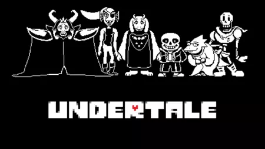

Descripcion
Caes al mundo subterraneo de los monstruos y tienes que escapar. Lo especial es que puedes terminar el juego sin matar a nadie, haciendo amistad con los enemigos. El juego recuerda todo lo que haces y si eres malo con los personajes ellos se lo toman en serio. Tiene mucho humor y personajes muy queribles.
Desarrollador
Toby Fox
Por que esta en el top 10?
Porque rompe las reglas de lo que se supone que debe ser un RPG. Ademas Toby Fox hizo casi todo el solo, incluyendo la musica.
Informacion rapida
Ano de lanzamiento: 2015
Genero: RPG
Desarrollador: Toby Fox
← Stardew Valley Outer Wilds →